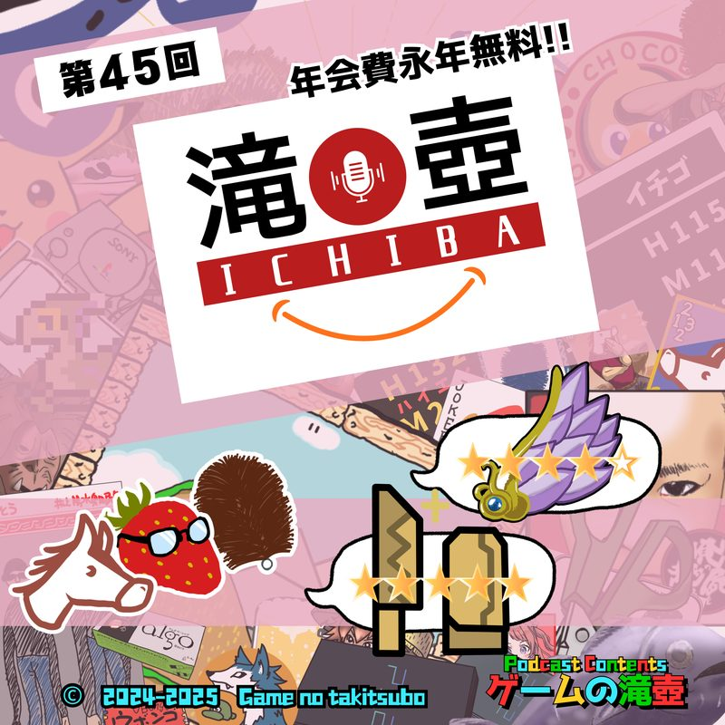
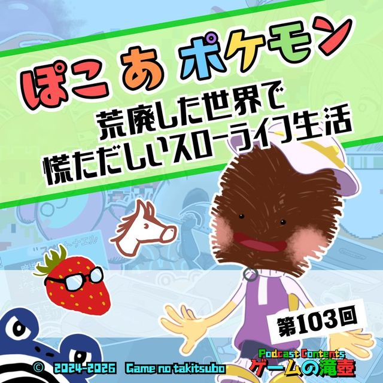

ホーム
エピソード
名物企画
ゲーム診断
滝壺DB
お知らせ
聴き方
おたより
公式X
ブログ
エピソード一覧へ
アートワークを大きく見る
#99 ・ 2026.04.01 配信 ・ 1時間33分
しんかのひほう ★★★★☆ とてもいい商品ですが、目が5つ、口が2つになったので星マイナス1です
とてもいい商品
0:00
--:--
⏪ 10秒
30秒 ⏩
1.0x
🔗 この位置のリンク
アプリ・他のサービスでも聴けます
Spotify
Apple Podcasts
Amazon Music
LISTEN
YouTube
ABOUT
この回について
滝壺の3人が通販で買った（？）アイテムの紹介をしています！ 以下は利用した通販サイトです。 ※見た目のみですが、レビューの★を選択するとコメントが読めます！ TakiExTuboss： https://takiextuboss.aprilfools.pgw.jp/ 滝壺市場： https://takitsuboichiba.aprilfools.pgw.jp/
この回は名物企画「
とてもいい商品
」のひとつです。
GAMES & KEYWORDS
登場ゲームタイトル・キーワード
モンスターハンターシリーズ
ドラゴンクエストシリーズ
ファイナルファンタジーシリーズ
ポケットモンスターシリーズ
モンスターファームシリーズ
スーパーマリオシリーズ
パワフルプロ野球シリーズ
バイオハザードシリーズ
アイドルマスターシンデレラガールズ
ボンバーマンシリーズ
俺の屍を越えてゆけ
人生ゲーム
バニーガーデン
ベイブレードエックス XONE
聖剣伝説2
Granny Smith
チンギスハーン・蒼き狼と白き牝鹿IV
ラクガキ王国シリーズ
沙織 -美少女達の館-
ポケットモンスター 緑
サクラ大戦
海腹川背
スペースインベーダー
ウマ娘 プリティーダービー
ポケモンチャンピオンズ
ドラゴンクエストVII Reimagined
Baby Steps
ロマンシングサガ2 リベンジオブザセブン
📮 この回の感想をおたよりで送る
Xで感想をポスト
RELATED
関連する回

キメラのつばさ ★★★★☆ とてもいい商品ですが、天井に穴があいたので星マイナス1です
#45
2025.04.01
とてもいい商品

ぽこ あ ポケモン「荒廃した世界で慌ただしいスローライフ生活」
#103
2026.04.29
ポケモン緑、サクラ大戦、海腹川背…今夜決定！ 国民の祝日にふさわしいゲーム！！
#98
2026.03.25
ふさわしいゲーム
← 前の回 #98
ポケモン緑、サクラ大戦、海腹川背…今夜決定！ 国民の祝日にふさわしいゲーム！！
次の回 #100 →
100点満点のゲーム！！